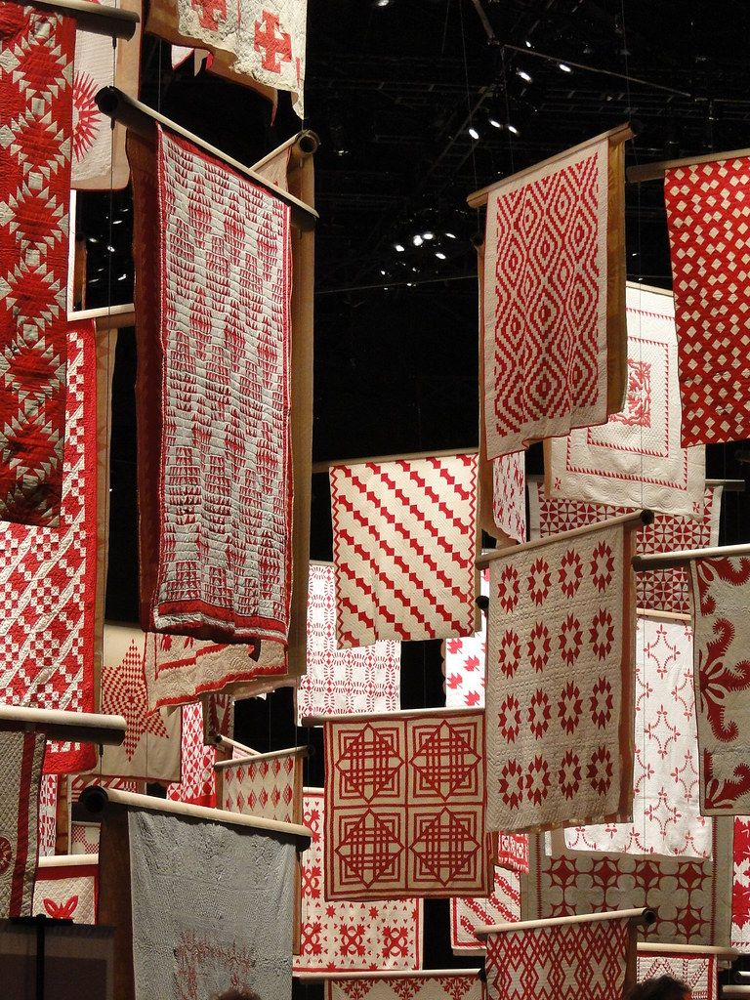

About Naralivin
That handloom textiles deserve a proper place in modern business — not as a novelty, but as a genuinely better product. Naralivin connects India's skilled weaving communities with hotels, retailers, and exporters who care about what goes into the products they sell.

Naralivin didn't start in a boardroom. It started in Panipat — a city that's been at the heart of India's textile trade for generations. If you've ever visited, you know the place runs on looms. The sound of shuttles is as common as traffic.
We grew up around this. Watching weavers create incredible fabrics by hand, then seeing those same products get undervalued in crowded wholesale markets. The craftsmanship was there. The quality was there. But the connection to the businesses that could actually appreciate and pay fairly for this work? That was missing.
So we built Naralivin to bridge that gap. We work directly with artisan clusters — no middlemen, no long supply chains eating into what the weavers earn. We handle quality control, custom sizing, private labelling, and logistics so our partners get a reliable, professional supply chain backed by centuries of weaving knowledge.
Today, we supply handloom home textiles to hotels, retail chains, healthcare facilities, and exporters across India and internationally. The business has grown, but the core hasn't changed: good products, made by hand, delivered with care.
What We Stand For
We buy directly from weaving clusters in Panipat, Uttar Pradesh, West Bengal, Tamil Nadu, and Rajasthan. No middlemen means better prices for both the weaver and the buyer.
Every batch goes through dimensional checks, wash tests, and colour fastness testing before it ships. We don't rely on "looks good enough" — we have numbers to back it up.
We understand bulk ordering, lead times, private labelling, and custom packaging. If you need 5,000 bed sheets with your brand tag, we know how to make that happen smoothly.
Handloom weaving uses zero electricity. Our entire production supports rural livelihoods and traditional skills. It's not a marketing angle — it's how the product is made.
We'll tell you realistic lead times, flag potential issues early, and never promise something we can't deliver. Long-term partnerships matter more to us than one big order.
Many of our clients started with a 200-piece trial order. Some now order tens of thousands annually. We scale with you — and the quality stays the same.
Where We're Based
There's a reason we're based here. Panipat has been India's largest hub for home textiles manufacturing for decades. The city produces everything from blankets and bed sheets to rugs and furnishing fabric — and a significant portion of it is still made on handlooms.
Being in Panipat means we're close to our weavers, close to our raw material suppliers, and well-connected to major logistics routes across North India. It lets us maintain quality control in person, respond quickly to orders, and keep our costs competitive.
Whether you're a hotel chain, a retail brand, or an exporter — we'd love to hear what you're looking for.
Get in Touch →